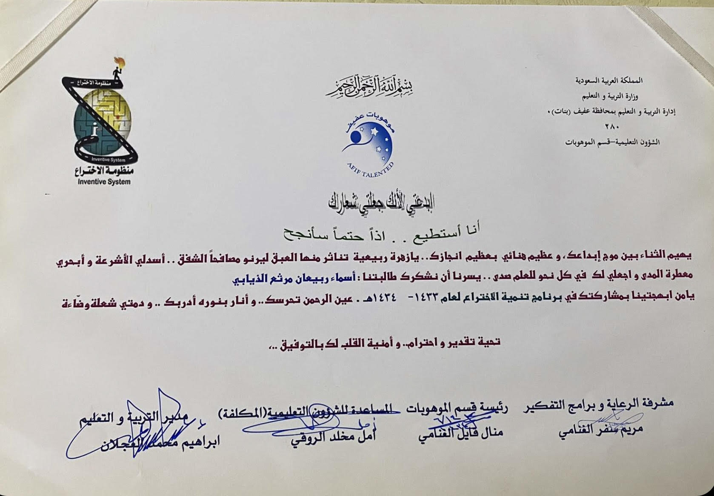

I am studying at the University of Jeddah in the eighth semester, majoring in computer science from the College of Computing and Information Technology, Al-Faisaliah branch, in Jeddah. At every stage of the study, I have an achievement, or I consider it an achievement for myself. I completed my secondary education with a score of 92.78. Also, the intermediate stage was good, as I completed the intermediate stage in the Holy Qur’an Memorization School, and I completed half of the Qur’an by memorization. In the primary stage, I was chosen among the ten students who passed the talent and invention test. I was nominated and got second place at the governorate level. In the future, I aspire to take a course in the field of law and also develop in my field of study because I love computers
